Delete the image file of any drawing that shows a name, a face photo, a school or other personal information.
The app skips images that are missing. This page is for the team only and is not served by the app.
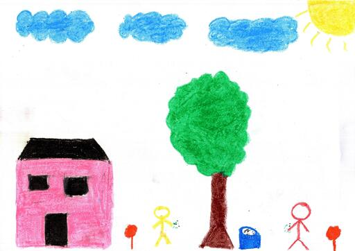
g001 · Happiness · model 0.187
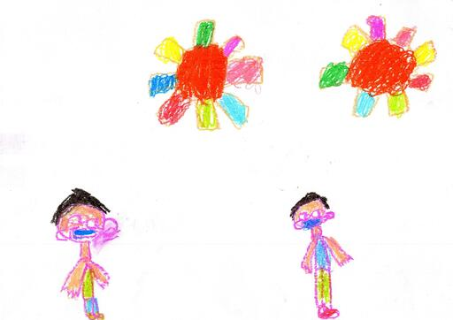
g002 · Sadness · model 0.271
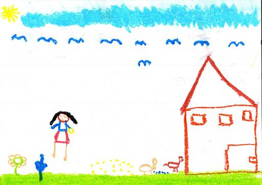
g003 · Happiness · model 0.353
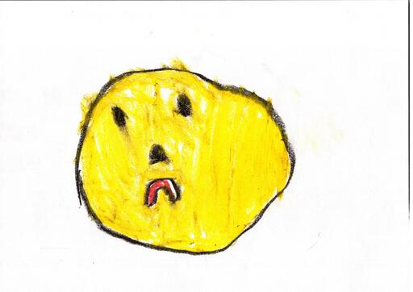
g004 · Sadness · model 0.870
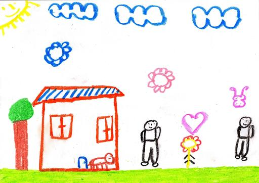
g005 · Happiness · model 0.261
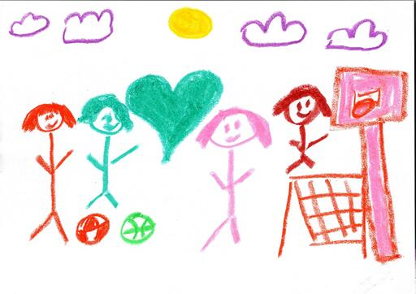
g006 · Happiness · model 0.240
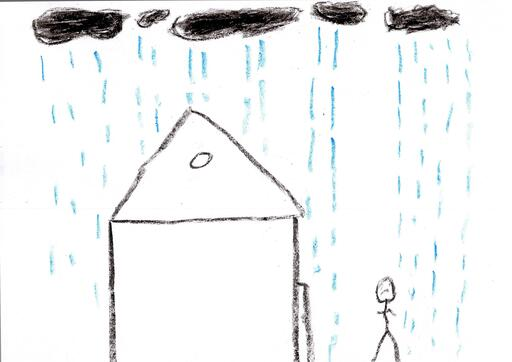
g007 · Sadness · model 0.972
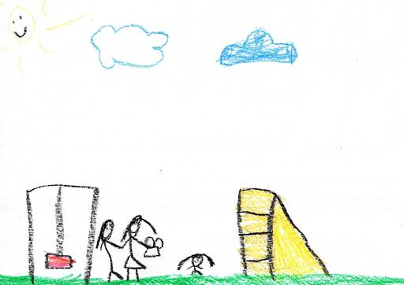
g008 · Sadness · model 0.797
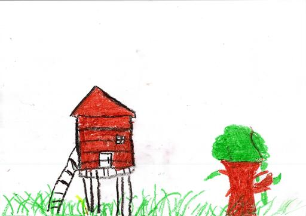
g009 · Happiness · model 0.588
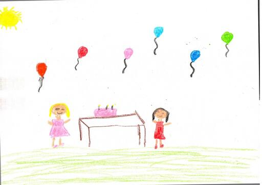
g010 · Happiness · model 0.056
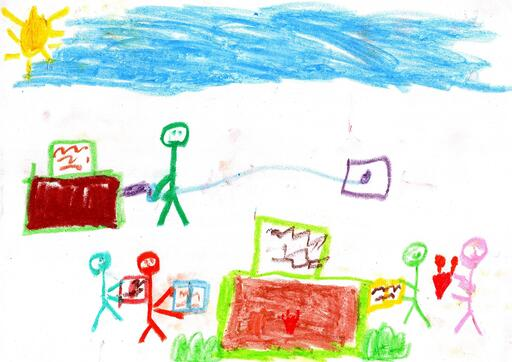
g011 · Sadness · model 0.144
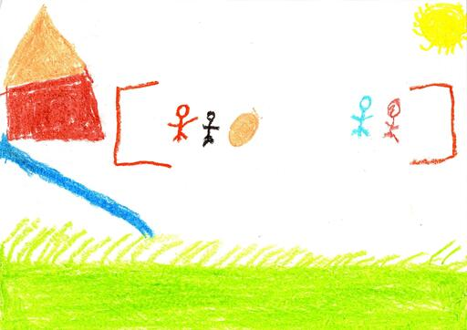
g012 · Happiness · model 0.535
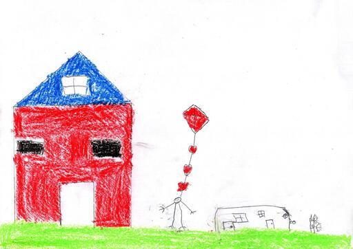
g013 · Happiness · model 0.375
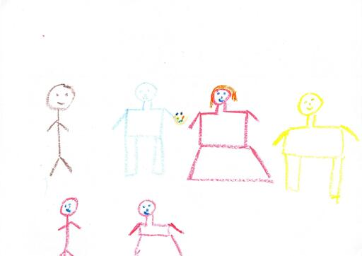
g014 · Happiness · model 0.688
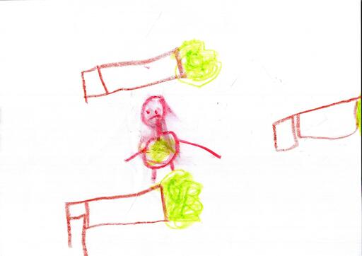
g015 · Sadness · model 0.540
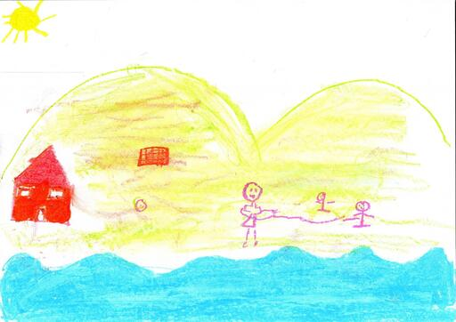
g016 · Happiness · model 0.147
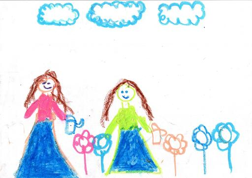
g017 · Happiness · model 0.371
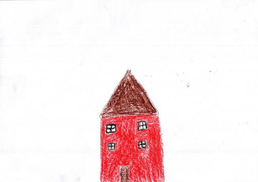
g018 · Happiness · model 0.489
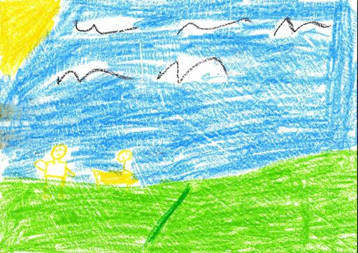
g019 · Happiness · model 0.644
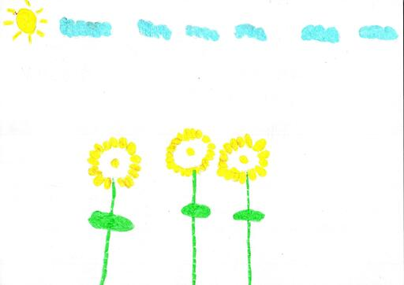
g020 · Happiness · model 0.267
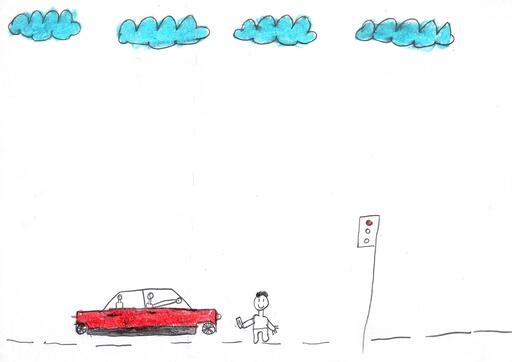
g021 · Sadness · model 0.764
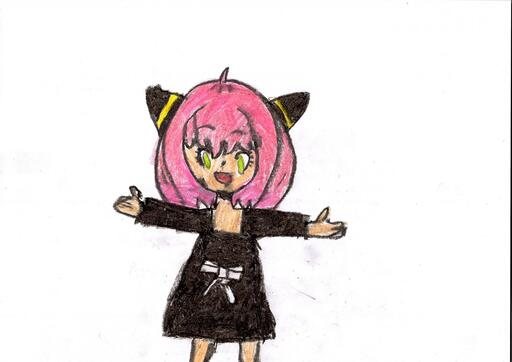
g022 · Happiness · model 0.653
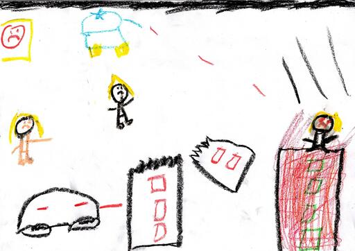
g023 · Sadness · model 0.686
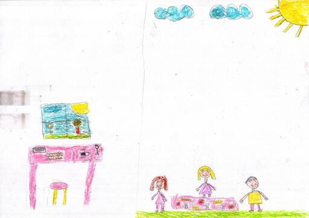
g024 · Happiness · model 0.180
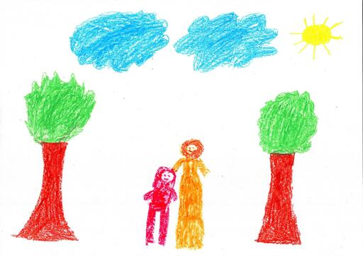
g025 · Happiness · model 0.129
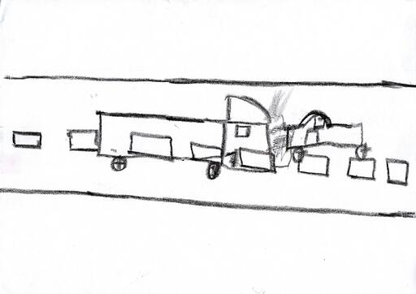
g026 · Sadness · model 0.655
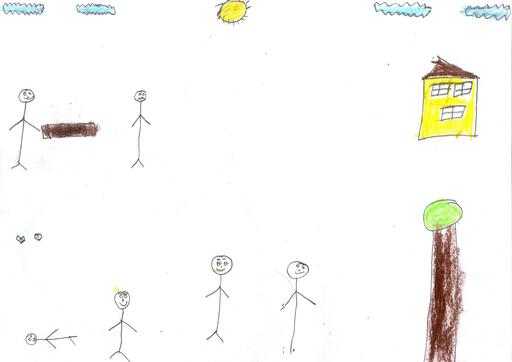
g027 · Sadness · model 0.663
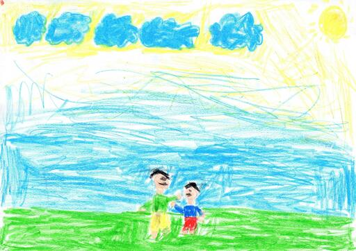
g028 · Sadness · model 0.171
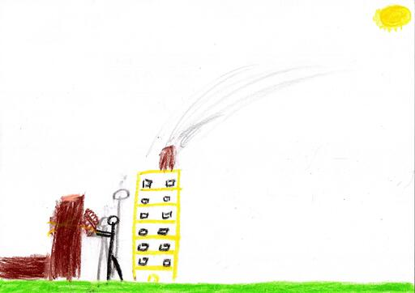
g029 · Sadness · model 0.534
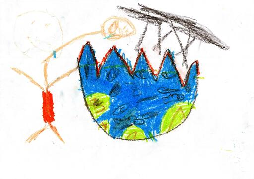
g030 · Sadness · model 0.755
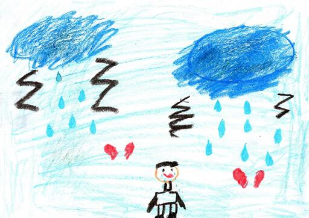
g031 · Sadness · model 0.825
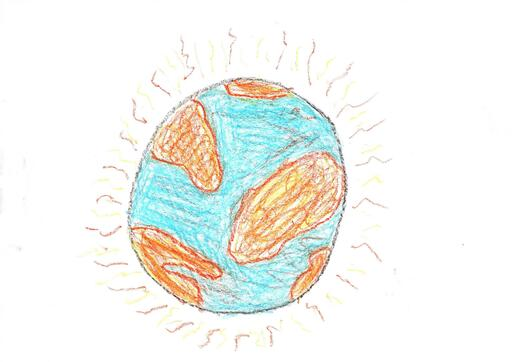
g032 · Sadness · model 0.746
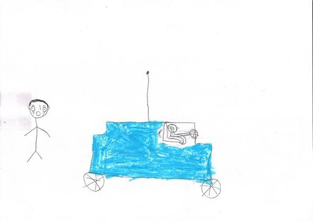
g033 · Sadness · model 0.755
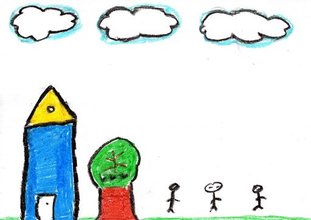
g034 · Happiness · model 0.312
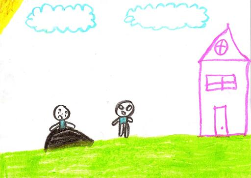
g035 · Sadness · model 0.582
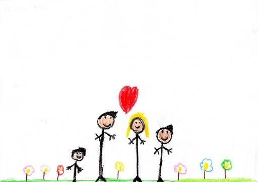
g036 · Happiness · model 0.127
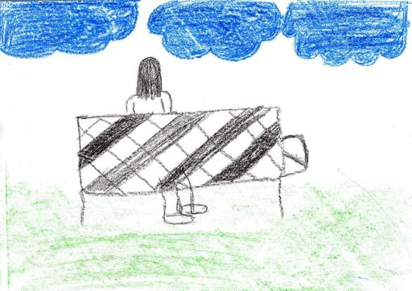
g037 · Sadness · model 0.704g038 · Happiness · model 0.551